Hieu Nguyen, Ph.D.
Neuroimaging Research Branch
National Institute on Drug Abuse, NIH
Baltimore, MD 21224
Email: hieu.nguyen at nih dot gov
Google Scholar, LinkedIn
I am currently a postdoctoral research fellow at Neuroimaging Research Branch, NIDA IRP, NIH. Previously, I was a graduate research assistant at Experimental Mechanics and Computer Vision (EMCV) Lab,
Catholic University of America where I worked under the supervision of Dr. Zhaoyang Wang on the high-accuracy, real-time 3D imaging and shape reconstruction systems. Before that, I received B.E.
and M.Sc. in Electrical Engineering Department, Catholic University of America.
Research Interest
My research interest includes different perspectives in 3D shape reconstruction and neuroimaging. The main goal is to develop the 3D shape, deformation,
and vibration measurement system using the stereo-vision-based techniques. Currently, I am developing various machine learning and deep learning methods to neuroimaging modalities.
- Real-time, high-accuracy 3D imaging and shape measurement
- Camera and depth sensors
- Transcranial Magnetic Stimulation (TMS) control
- Magnetic resonance imaging (MRI)
Papers under review
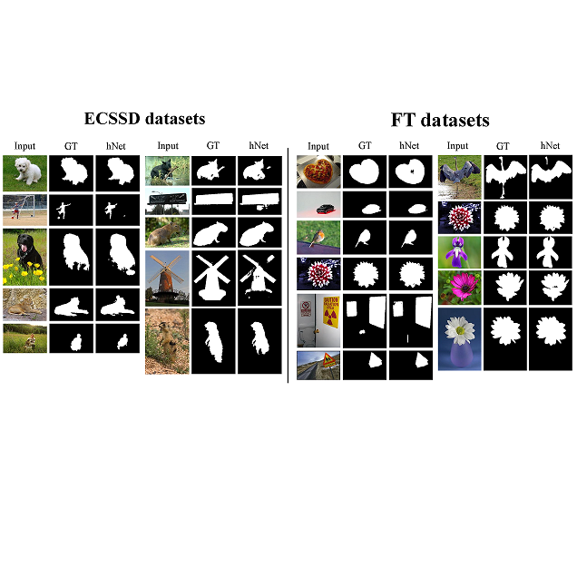
H. Nguyen, K. Ly, T. Tran, Y. Wang, and Z. Wang
Results in Optics, 2021 (under review).
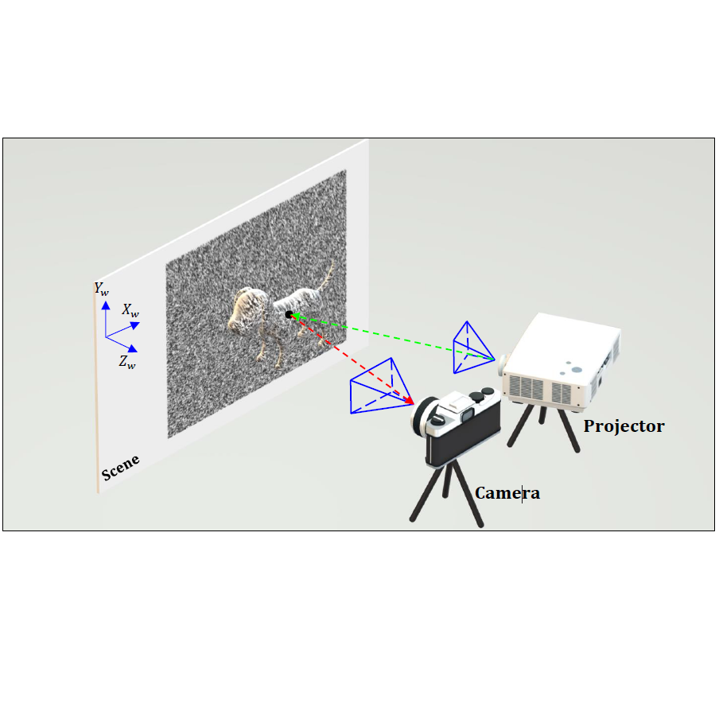
H. Nguyen, T. Tran, Y. Wang, and Z. Wang
Optics and Lasers in Engineering, 2021 (under review).
Journals
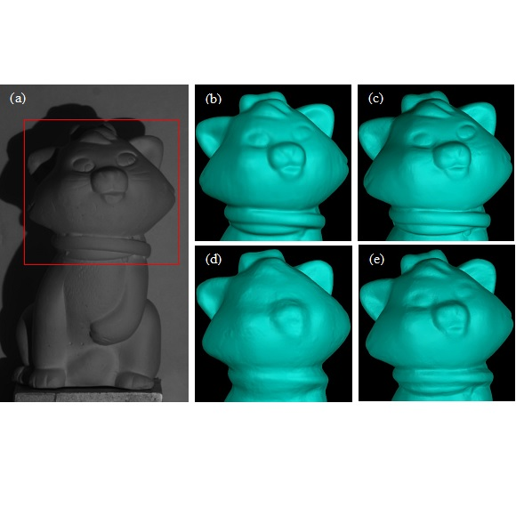
H. Nguyen, J. Liang, Y. Wang, and Z. Wang
J. Phys. Photonics 3, 014004, 2021.
[pdf]
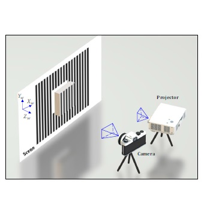
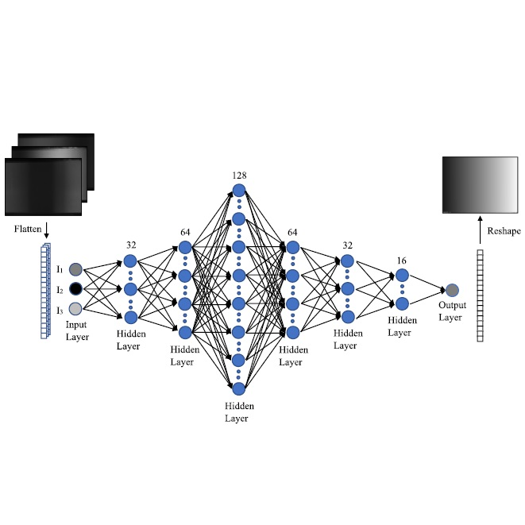
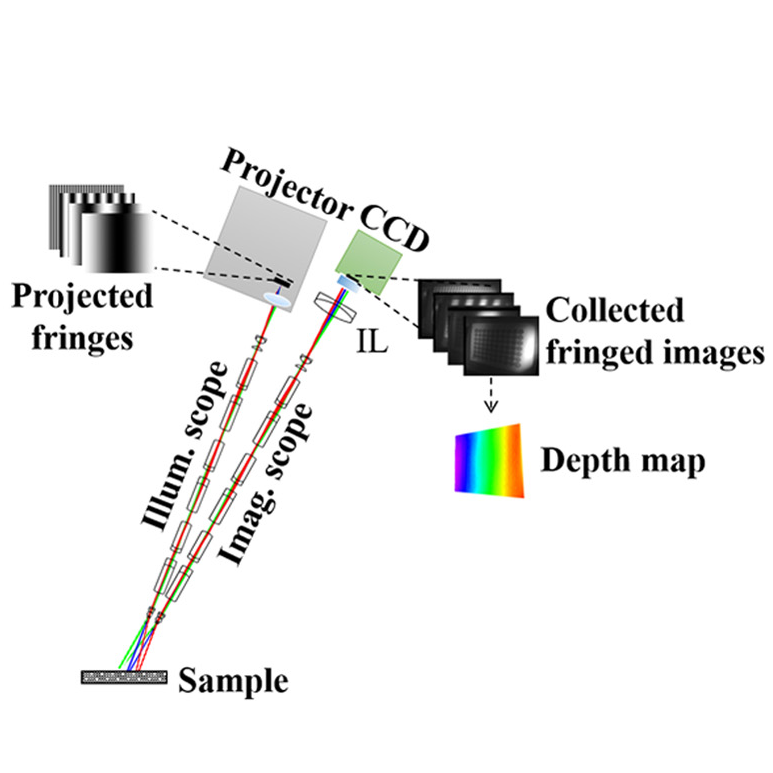
H. Le, H. Nguyen, Z. Wang, J. Opfermann, S. Leonard, A. Krieger, and J. Kang
Journal of Biomedical Optics 23(5), 056009, 2018.
[pdf]
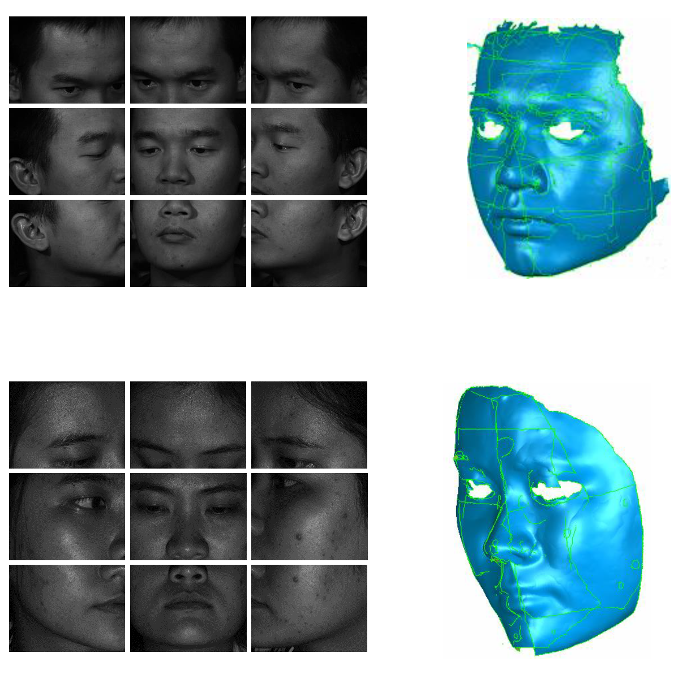
H. Nguyen, H. Kieu, Z. Wang, and H. Le
Applied Optics 57(9), 2188-2196, 2018.
[pdf]
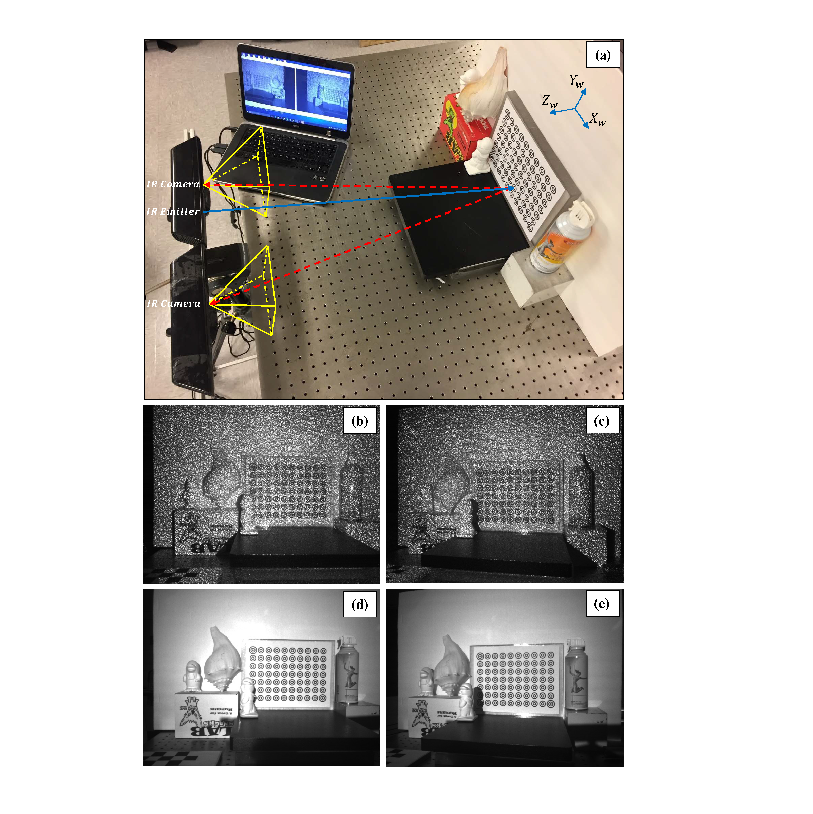
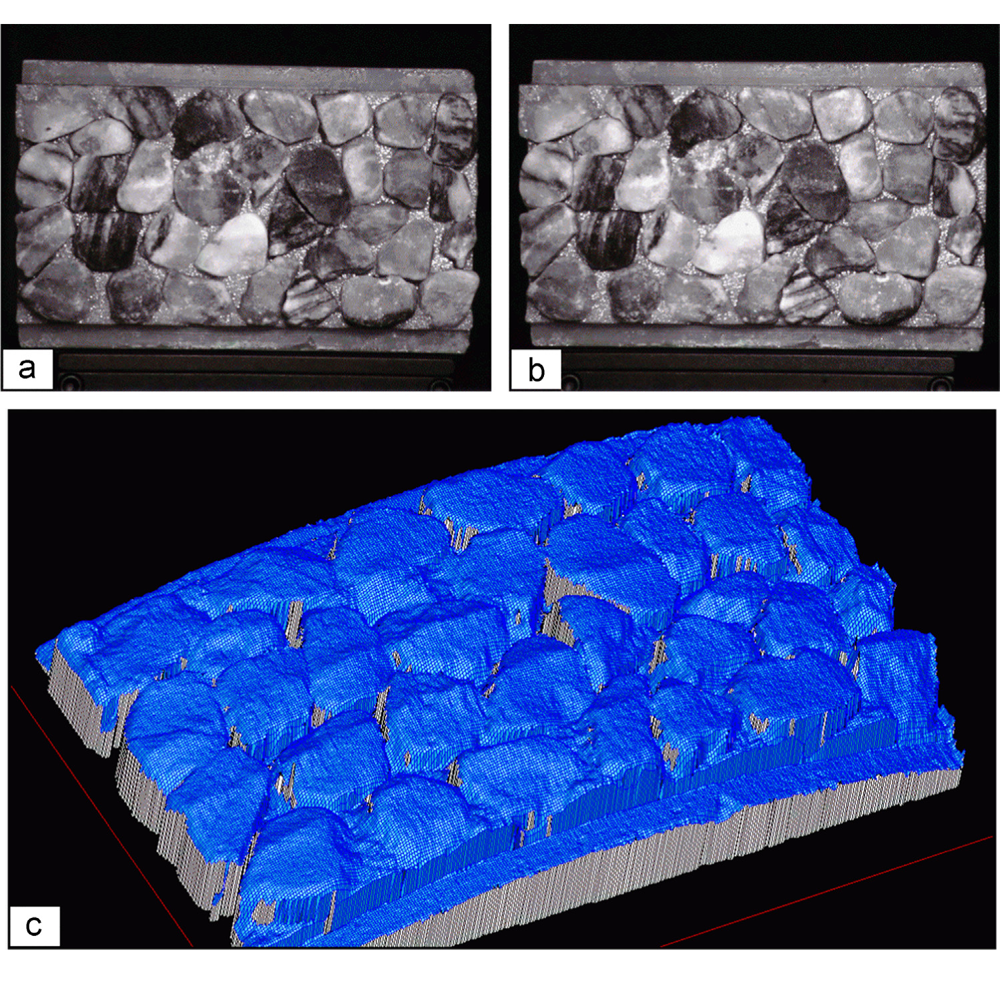
Z. Wang, H. Kieu, H. Nguyen, and M. Le
Optics and Lasers in Engineering 65(1), 18-27, 2015.
[pdf]
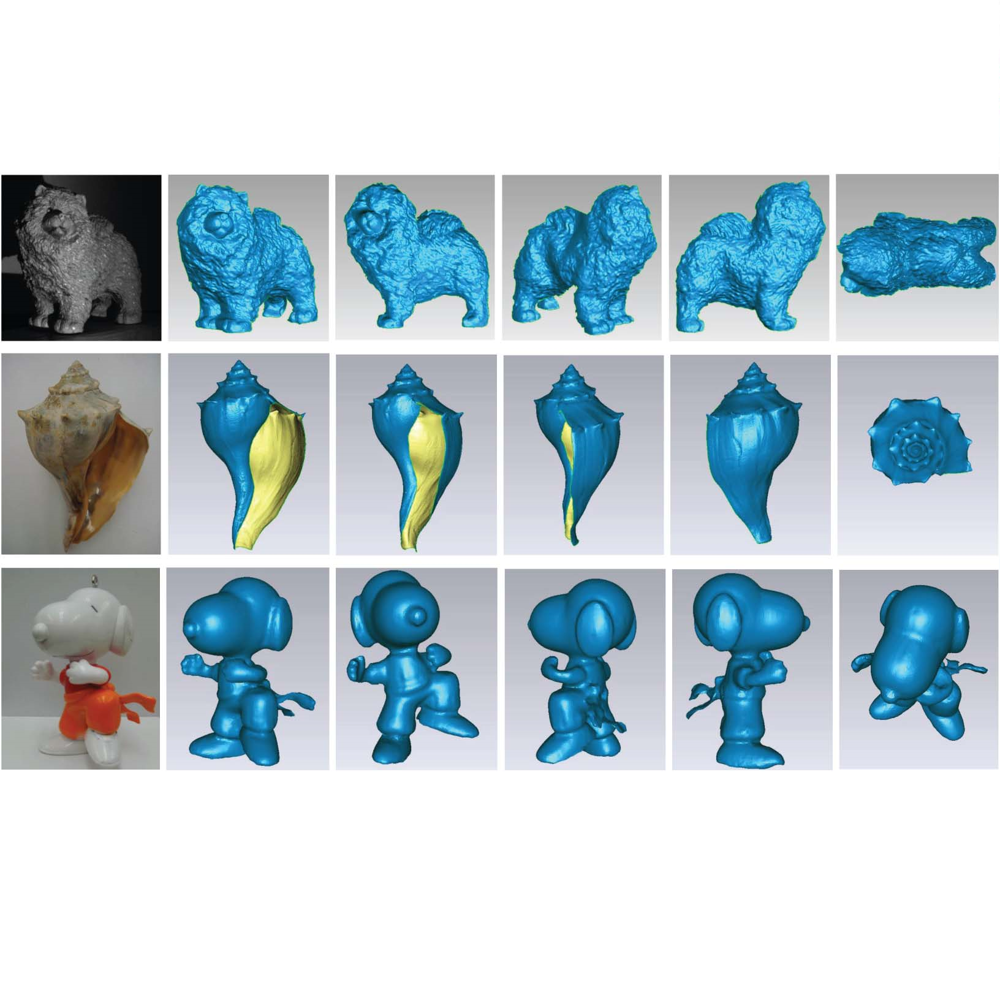
H. Nguyen, D. Nguyen, Z. Wang, H. Kieu, and M. Le
Applied Optics 54(1), A9-A17, 2015.
[pdf]
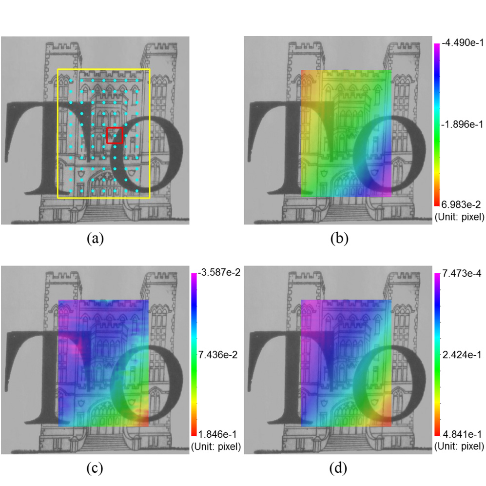
Z. Wang, H. Nguyen, and J. Quisberth
Optical Engineering 53(11), 110502, 2014.
[pdf]
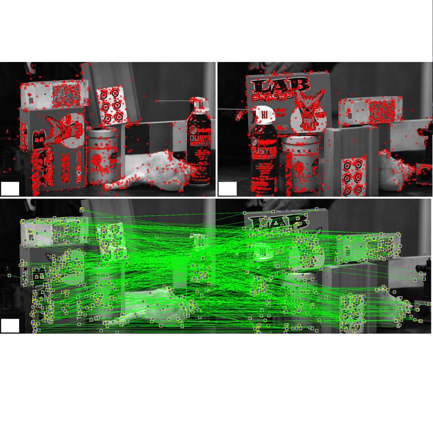
H. Kieu, T. Pan, Z. Wang, M. Le, H. Nguyen, and M. Vo
Measurement Science and Technology 25(3), 035401, 2014.
[pdf]
Conferences
- H. Le, H. Nguyen, Z. Wang, et al, "An endoscopic 3D structured illumination imaging system for robotic anastomosis surgery (Conference Presentation)", SPIE BIOS Advanced Biomedical and Clinic Diagnostic and Surgical Guidance Systems XVI, San Francisco (2018).
- Z. Wang and H. Nguyen, “3D shape measurement using image-matching-based techniques,” 2017 SPIE Commercial + Scientific Sensing and Imaging, Anaheim, California, Apr 9-13, 2017.
- H. Le, H. Nguyen, Z. Wang, and J. Kang, "A demonstration of structured-illumination-based technique using commercial surgical endoscope", CLEO: Applications and Technology, 2017.
- H. Le, H. Nguyen, Z. Wang, et al., “3D endoscopic imaging using structured illumination technique for surgical guidance and assessment,” 2017 Advanced Biomedical and Clinical Diagnostic and Surgical Guidance Systems XV Conference, San Francisco, California, Jan 29-31, 2017.
- H. Nguyen, Z. Wang, J. Quisberth, “3D shape measurement of shiny object using fringe projection technique,” 2015 SEM Annual Conference and Exposition on Experimental and Applied Mechanics, Costa Mesa, California, June 8-11, 2015.
- Z. Wang, H. Nguyen, J. Quisberth, “Accuracy comparison of fringe projection technique and 3D digital image correlation technique,” 2015 SEM Annual Conference and Exposition on Experimental and Applied Mechanics, Costa Mesa, California, June 8-11, 2015.
- J. Quisberth, Z. Wang, and H. Nguyen, “Acquisition of audio information from silent high speed video,” 2015 SEM Annual Conference and Exposition on Experimental and Applied Mechanics, Costa Mesa, California, June 8-11, 2015.
- H. Kieu, Z. Wang, H. Nguyen, and M. Le, “Single-camera-based 3D DIC for fast-speed measurement,” 2014 SEM Annual Conference and Exposition on Experimental and Applied Mechanics, Greenville, South Carolina, June 2-5, 2014.
- H. Kieu, Z. Wang, M. Le, and H. Nguyen, “Passive 3D face reconstruction with 3D digital image correlation,” 2014 SEM Annual Conference and Exposition on Experimental and Applied Mechanics, Greenville, South Carolina, June 2-5, 2014.
- M. Le, Z. Wang, and H. Nguyen, “Some practical considerations in high-speed 3D shape and deformation measurement using single-shot fringe projection technique,” 2014 SEM Annual Conference and Exposition on Experimental and Applied Mechanics, Greenville, South Carolina, June 2-5, 2014.
- H. Nguyen, H. Kieu, M. Le, and Z. Wang, “Fast-speed, high-accuracy and real-time 3D imaging with fringe projection technique,” 2014 SEM Annual Conference and Exposition on Experimental and Applied Mechanics, Greenville, South Carolina, June 2-5, 2014.
Single-Shot 3D Shape Reconstruction Using Structured Light and Deep Convolutional Neural Networks
Real-time, high-accuracy 3D imaging and shape measurement using Fringe Projection Profilometry
3D shape, deformation, and vibration measurements using RGB-D sensors and Digital Image Correlation